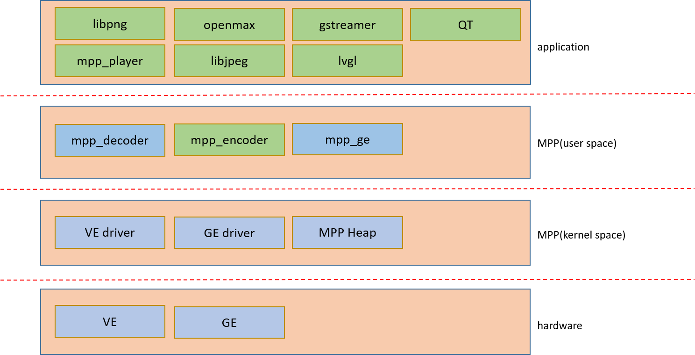

MPP 使用指南
2 Dec 2024
Read time: 1 minute(s)
Media Process Platform (MPP) 是 ArtInChip 自主研发的通用多媒体处理软件平台，适用于 ArtInChip 芯片系列。支持在 RTOS 平台上运行， 屏蔽了 ArtInChip 不同芯片平台多种多媒体硬件模块（VE、GE 等）版本的差异，为使用者提供简单易用的多媒体处理 API，支持多种多媒体解决方案。
目前支持硬件模块包括：
-
VE：视频、图片编解码功能
-
GE：2D 图形加速
| 术语 | 定义 | 注释说明 |
|---|---|---|
| GE | Graphic Engine | 图形加速引擎 |
| VE | Video Engine | 视频加速引擎 |
| MPP | Media Process Platform | 通用多媒体处理软件平台 |
| VIN | Video Input | 视频输入（采集）模块 |
| packet | video bitstream packet | 一帧视频或图片码流数据 |
| frame | frame | 一帧解码后的视频或图片数据 |
MPP 在系统架构的层次图如下图：

- Hardware硬件层是 ArtInChip 系列芯片平台的多媒体硬件加速引擎 VE/GE。
- VE 模块硬件层接口请参考芯片用户手册 VE 模块
- GE 模块硬件层接口请参考芯片用户手册 GE 模块
- DVP 模块硬件层接口请参考芯片用户手册 DVP 模块
- Driver
- VE 模块驱动请参考 。
- GE 模块驱动请参考 。
- DVP 模块驱动，请参考
- MPP
包括视频解码 mpp_decoder、视频编码 mpp_encoder、2D 图像处理 mpp_ge 等功能模块。
- Application
- 提供简易播放器应用 mpp_player
- 对接第三方开源库 OpenMAX、GStreamer、LVGL 等。